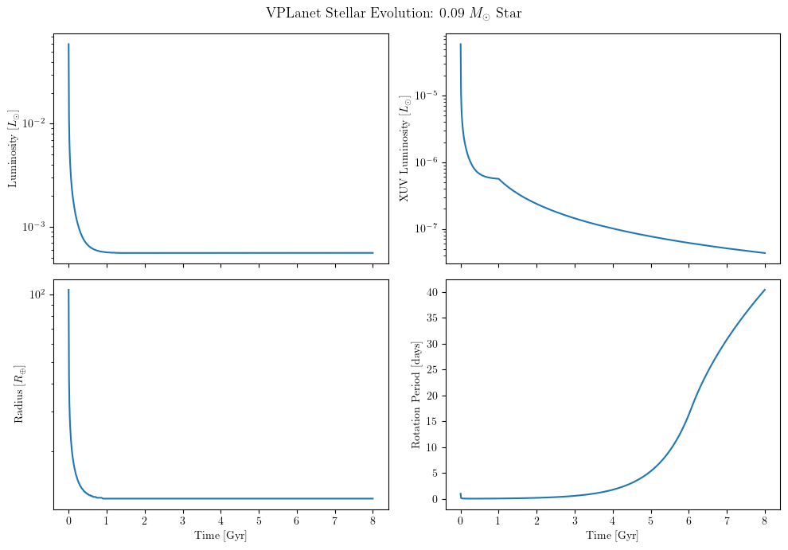
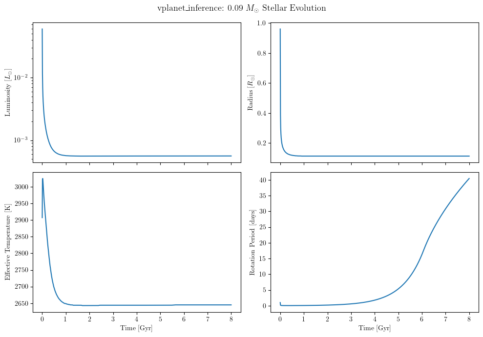

Setting Up and Running VPLanet Models
This tutorial walks through the full workflow for running a VPLanet stellar evolution simulation:
Understanding VPLanet input files — the primary control file (
vpl.in) and body files (star.in)Running VPLanet from the command line — a minimal working example using the
stellarmoduleReading VPLanet output files — the log file and time-series forward file
Running the same model through ``vplanet_inference`` — a Python interface with unit-aware parameter substitution
The example models a low-mass star (0.09 M☉, similar in mass to TRAPPIST-1) and tracks how its luminosity, XUV luminosity, radius, effective temperature, and rotation period evolve over 8 Gyr.
References:
[1]:
import os
import subprocess
import numpy as np
import matplotlib.pyplot as plt
import vplanet_inference as vpi
import astropy.units as u
# vpi.INFILE_DIR points to the bundled template infile directory
INFILE_PATH = os.path.join(vpi.INFILE_DIR, "stellar/")
print(f"Infile directory: {INFILE_PATH}")
Infile directory: /home/jbirky/Tresorit/packages/vplanet_inference/infiles/stellar/
1. VPLanet Input Files: The Manual Way
A VPLanet simulation requires at minimum two types of input files:
File |
Purpose |
|---|---|
``vpl.in`` |
Primary control file — system-level settings (units, timing, bodies, output) |
``<body>.in`` |
One file per body — physics modules, initial conditions, and body-level parameters |
VPLanet uses a consistent option naming convention based on the leading character(s) of each option name:
Prefix |
Data type |
Example |
|---|---|---|
|
Boolean (0 or 1) |
|
|
Integer |
|
|
Double (float) |
|
|
String |
|
|
String array (multiple values) |
|
Everything after a # on a line is a comment and is ignored by the parser. Option names are case-sensitive and must be spelled exactly as documented.
See the VPLanet input options reference for a complete listing of all available parameters.
1.1 The Primary Input File (vpl.in)
The primary file sets system-wide options and lists the body files to load. It must always be named ``vpl.in`` and be present in the simulation directory.
[2]:
with open(os.path.join(INFILE_PATH, "vpl.in")) as f:
print(f.read())
# Primary input file for Trappist system
sSystemName Trappist # System Name
iVerbose 0 # Verbosity level
bOverwrite 1 # Allow file overwrites?
# All space after a # is ignored, as is white space
# The first lowercase letter(s) denote the cast: b=boolean, i=int, d=double,
# s=string. An "a" indicates an array and multiple arguments are allowed/expected.
# List of "body files" that contain body-specific parameters
saBodyFiles star.in # The host star
# Array options can continue to the next line with a terminating "$". The $ can be
# at the end of the string or not. Comments are allowed afterwards.
# Input/Output Units
sUnitMass solar # Options: gram, kg, Earth, Neptune, Jupiter, solar
sUnitLength aU # Options: cm, m, km, Earth, Jupiter, solar, AU
sUnitTime YEAR # Options: sec, day, year, Myr, Gyr
sUnitAngle d # Options: deg, rad
sUnitTemp K
# Units specified in the primary input file are propagated into the bodies. Otherwise
# specifiy units on a per body basis in the body files.
# Most string arguments can be in any case and need only be unambiguous.
# Input/Output
bDoLog 1 # Write a log file?
iDigits 6 # Maximum number of digits to right of decimal
dMinValue 1e-10 # Minimum value of eccentricity/obliquity
# Option names must be exact in spelling and case.
# Evolution Parameters
bDoForward 1 # Perform a forward evolution?
bVarDt 1 # Use variable timestepping?
dEta 1.0e-2 # Coefficient for variable timestepping
dStopTime 8.0e9 # Stop time for evolution
dOutputTime 1.0e7 # Output timesteps (assuming in body files)
# Some options are only permitted in the primary file, some are forbidden.
# That should really be documented!
Key options explained:
Option |
Value |
Description |
|---|---|---|
|
|
Prefix for all output files (e.g. |
|
|
Verbosity level printed to terminal (0 = silent, 5 = maximum) |
|
|
Allow output files to be overwritten on re-runs |
|
|
Space-separated list of body input files to load |
|
|
Mass unit for input/output ( |
|
|
Length unit ( |
|
|
Time unit ( |
|
|
Angle unit ( |
|
|
Write a |
|
|
Run the simulation forward in time |
|
|
Use adaptive (variable) timestepping |
|
|
Coefficient controlling adaptive timestep size (smaller = more accurate, slower) |
|
|
Simulation end time in |
|
|
Interval at which time-series data are written (here: every 10 Myr) |
VPLanet docs: Primary input file options
1.2 Body Files (star.in)
Each body in the simulation — star, planet, or moon — has its own .in file. The ``saModules`` option activates the VPLanet physics modules for that body; each module introduces additional parameters specific to that physics.
Here we use the stellar module, which models stellar evolution using the Baraffe et al. (2015) pre-main-sequence grids and the Matt et al. (2015) magnetic braking prescription.
See the VPLanet modules reference for the full list of available modules and their options.
[3]:
with open(os.path.join(INFILE_PATH, "star.in")) as f:
print(f.read())
# Host star parameters
sName star # Body name
saModules stellar # Active modules
# Physical properties
dMass 0.09 # Mass in Msun
dRotPeriod -1.0 # Rotation period, negative -> days
dAge 1.0e6 # Initial age [yr]
# STELLAR parameters
sStellarModel baraffe # Stellar evolution model
bHaltEndBaraffeGrid 0 # Don't end sim when we reach end of grid
sMagBrakingModel matt # Magnetic braking model
dSatXUVFrac 1.0e-3 # XUV Saturation fraction
dSatXUVTime -1.0 # XUV Saturation timescale, negative-> in Gyr
dXUVBeta 1.23 # XUV decay power law exponent
saOutputOrder Time -Luminosity -LXUVStellar -Radius Temperature -RotPer # Outputs
Key options explained:
Option |
Value |
Description |
|---|---|---|
|
|
Name of this body; must match the filename without |
|
|
Physics modules active for this body |
|
|
Stellar mass in |
|
|
Initial rotation period. Negative value → units are days regardless of |
|
|
Starting age in |
|
|
Stellar evolution grid ( |
|
|
Magnetic braking prescription ( |
|
|
XUV saturation luminosity as a fraction of bolometric luminosity |
|
|
XUV saturation timescale. Negative value → units are Gyr |
|
|
Power-law exponent for XUV decay after saturation |
|
|
Variables written to the time-series |
The saOutputOrder option
This controls what columns appear in the .forward output file. A negative sign prefix (-Luminosity) instructs VPLanet to output that quantity in custom units rather than the system-wide units set in vpl.in:
saOutputOrder Time -Luminosity -LXUVStellar -Radius Temperature -RotPer
The actual units used for each column are reported in the log file’s Output Order: line.
To check what the custom units are for a vplanet output, run the following line in the command line:
vplanet -h
2. Running VPLanet from the Command Line
Once vpl.in and the body files are in place, run the simulation by navigating to the infile directory and calling:
cd /path/to/infiles/stellar/
vplanet vpl.in
The argument vpl.in is required — it tells VPLanet which primary input file to use. From this notebook, we can do the same thing with subprocess:
[4]:
result = subprocess.run(
["vplanet", "vpl.in"],
cwd=INFILE_PATH,
capture_output=True,
text=True,
)
if result.returncode == 0:
print("VPLanet finished successfully.")
print(result.stdout if result.stdout else "(no terminal output — iVerbose is set to 0)")
else:
print("VPLanet encountered an error:")
print(result.stderr)
VPLanet finished successfully.
(no terminal output — iVerbose is set to 0)
With iVerbose 0, VPLanet produces no terminal output on a successful run. Setting iVerbose 5 in vpl.in will print detailed progress messages.
All simulation output is written to files — described in the next section.
3. Understanding VPLanet Output Files
After a successful run, VPLanet creates the following output files in the simulation directory. The filenames are prefixed with sSystemName (here: Trappist):
File |
Description |
|---|---|
|
Human-readable log with the initial and final state of every quantity, in SI units |
|
Time-series data for the |
If you had multiple bodies (e.g. a planet named planet), there would be a separate Trappist.planet.forward file for each one.
3.1 The Log File
The log file (Trappist.log) is written in SI units regardless of the sUnitMass/sUnitLength/sUnitTime settings in vpl.in. It is divided into four sections:
Header — executable path, VPLanet version, input files used, and internal unit system
Formatting — integration method, timestep information
Initial system properties — complete state of every body at
t = dAgeFinal system properties — complete state of every body at
t = dAge + dStopTime
The log file is the most reliable place to read initial and final values for any quantity, including quantities not listed in saOutputOrder. The Output Order: line near the end of each body’s section also confirms the column order and units of the .forward file.
[5]:
log_path = os.path.join(INFILE_PATH, "Trappist.log")
with open(log_path) as f:
print(f.read())
-------- Log file Trappist.log -------
Executable: /home/jbirky/anaconda3/envs/vpi/bin/vplanet
Version: Unknown
System Name: Trappist
Primary Input File: vpl.in
Body File #1: star.in
Allow files to be overwitten: Yes
Mass Units: Grams
Length Units: Meters
Time Units: Seconds
Angle Units: Radians
------- FORMATTING -----
Verbosity Level: 0
Crossover Decade for Scientific Notation: 4
Number of Digits After Decimal: 6
Integration Method: Runge-Kutta4
Direction: Forward
Time Step: 3.155760e+07
Stop Time: 2.524608e+17
Output Interval: 3.155760e+14
Use Variable Timestep: Yes
dEta: 0.010000
Minimum Value of ecc and obl: 1.000000e-10
---- INITIAL SYSTEM PROPERTIES ----
(Age) System Age [sec]: 3.155760e+13
(Time) Simulation Time [sec]: 0.000000
(TotAngMom) Total Angular Momentum [kg*m^2/sec]: 1.149304e+42
(TotEnergy) Total System Energy [kg*m^2/sec^2]: -1.877809e+39
(PotEnergy) Body's non-orbital Potential Energy [kg*m^2/sec^2]: -1.919599e+39
(KinEnergy) Body's non-orbital Kinetic Energy [kg*m^2/sec^2]: 4.178988e+37
(DeltaTime) Average Timestep Over Last Output Interval [sec]: 0.000000
----- BODY: star ----
Active Modules: STELLAR
Module Bit Sum: 65
Color: 000000
(Mass) Mass [kg]: 1.789574e+29
(Radius) Radius [Rearth]: 104.749856
(RadGyra) Radius of Gyration/Moment of Inertia Constant []: 0.444800
(RotAngMom) Rotational Angular Momentum [kg*m^2/sec]: 1.149304e+42
(RotVel) Rotational Velocity [m/sec]: 4.858597e+04
(BodyType) Type of Body (0 == planet) []: 0.000000
(RotRate) Rotational Frequency [/sec]: 7.272205e-05
(RotPer) Rotational Period [days]: 1.000000
(Density) Average Density [kg/m^3]: 143.260634
(HZLimitDryRunaway) Semi-major axis of Dry Runaway HZ Limit [m]: 3.305062e+10
(HZLimRecVenus) Recent Venus HZ Limit [m]: 2.977014e+10
(HZLimRunaway) Runaway Greenhouse HZ Limit [m]: 3.916594e+10
(HZLimMoistGreenhouse) Moist Greenhouse HZ Limit [m]: 3.939084e+10
(HZLimMaxGreenhouse) Maximum Greenhouse HZ Limit [m]: 7.572440e+10
(HZLimEarlyMars) Early Mars HZ Limit [m]: 8.258537e+10
(Instellation) Orbit-averaged INcident STELLar radiATION [kg/sec^3]: -1.000000
(CriticalSemiMajorAxis) Holman & Wiegert (1999) P-type Critical Semi-major Axis [m]: -1.000000
(LXUVTot) Total XUV Luminosity [kg/sec^3]: 2.278648e+22
(LostEnergy) Body's Total Lost Energy [kg*m^2/sec^2]: 5.562685e-309
(LostAngMom) Lost Angular Momentum due to Magnetic Braking [kg*m^2/sec]: 5.562685e-309
(EscapeVelocity) Escape Velocity [m/sec]: 1.890905e+05
----- STELLAR PARAMETERS (star)------
(Luminosity) Luminosity [LSUN]: 0.059247
(LXUVStellar) Base X-ray/XUV Luminosity [LSUN]: 5.924722e-05
(Temperature) Effective Temperature [K]: 2907.334487
(LXUVFrac) Fraction of luminosity in XUV []: 0.001000
(RossbyNumber) Rossby Number []: 0.014106
(DRotPerDtStellar) Time Rate of Change of Rotation Period in STELLAR []: -8.292795e-11
(WindTorque) Stellar Wind Torque []: 4.662997e+26
Output Order: Time[year] Luminosity[LSUN] LXUVStellar[LSUN] Radius[Rearth] Temperature[K] RotPer[days]
Grid Output Order:
---- FINAL SYSTEM PROPERTIES ----
(Age) System Age [sec]: 2.524924e+17
(Time) Simulation Time [sec]: 2.524608e+17
(TotAngMom) Total Angular Momentum [kg*m^2/sec]: 1.123683e+42
(TotEnergy) Total System Energy [kg*m^2/sec^2]: -1.904483e+39
(PotEnergy) Body's non-orbital Potential Energy [kg*m^2/sec^2]: -1.631379e+40
(KinEnergy) Body's non-orbital Kinetic Energy [kg*m^2/sec^2]: 3.864917e+32
(DeltaTime) Average Timestep Over Last Output Interval [sec]: 3.155760e+14
----- BODY: star ----
Active Modules: STELLAR
Module Bit Sum: 65
Color: 000000
(Mass) Mass [kg]: 1.789574e+29
(Radius) Radius [Rearth]: 12.325630
(RadGyra) Radius of Gyration/Moment of Inertia Constant []: 0.465000
(RotAngMom) Rotational Angular Momentum [kg*m^2/sec]: 4.299455e+38
(RotVel) Rotational Velocity [m/sec]: 141.337450
(BodyType) Type of Body (0 == planet) []: 0.000000
(RotRate) Rotational Frequency [/sec]: 1.797864e-06
(RotPer) Rotational Period [days]: 40.449143
(Density) Average Density [kg/m^3]: 8.793460e+04
(HZLimitDryRunaway) Semi-major axis of Dry Runaway HZ Limit [m]: 3.208822e+09
(HZLimRecVenus) Recent Venus HZ Limit [m]: 2.902371e+09
(HZLimRunaway) Runaway Greenhouse HZ Limit [m]: 3.813333e+09
(HZLimMoistGreenhouse) Moist Greenhouse HZ Limit [m]: 3.840324e+09
(HZLimMaxGreenhouse) Maximum Greenhouse HZ Limit [m]: 7.457113e+09
(HZLimEarlyMars) Early Mars HZ Limit [m]: 8.132979e+09
(Instellation) Orbit-averaged INcident STELLar radiATION [kg/sec^3]: -1.000000
(CriticalSemiMajorAxis) Holman & Wiegert (1999) P-type Critical Semi-major Axis [m]: -1.000000
(LXUVTot) Total XUV Luminosity [kg/sec^3]: 1.663956e+19
(LostEnergy) Body's Total Lost Energy [kg*m^2/sec^2]: 1.440930e+40
(LostAngMom) Lost Angular Momentum due to Magnetic Braking [kg*m^2/sec]: 1.123253e+42
(EscapeVelocity) Escape Velocity [m/sec]: 5.512414e+05
----- STELLAR PARAMETERS (star)------
(Luminosity) Luminosity [LSUN]: 0.000558
(LXUVStellar) Base X-ray/XUV Luminosity [LSUN]: 4.326459e-08
(Temperature) Effective Temperature [K]: 2645.001971
(LXUVFrac) Fraction of luminosity in XUV []: 7.746982e-05
(RossbyNumber) Rossby Number []: 0.498844
(DRotPerDtStellar) Time Rate of Change of Rotation Period in STELLAR []: 2.326653e-11
(WindTorque) Stellar Wind Torque []: 2.862345e+21
Output Order: Time[year] Luminosity[LSUN] LXUVStellar[LSUN] Radius[Rearth] Temperature[K] RotPer[days]
Grid Output Order:
3.2 The Forward File
The forward file (Trappist.star.forward) contains one row per output timestep (dOutputTime), with columns corresponding to the variables in saOutputOrder.
For this example:
saOutputOrder Time -Luminosity -LXUVStellar -Radius Temperature -RotPer
The actual units for each column are confirmed in the log file:
Output Order: Time[year] Luminosity[LSUN] LXUVStellar[LSUN] Radius[Rearth] Temperature[K] RotPer[days]
The file is plain whitespace-delimited ASCII — easy to read with numpy.loadtxt.
[6]:
forward_path = os.path.join(INFILE_PATH, "Trappist.star.forward")
data = np.loadtxt(forward_path)
# Assign columns based on the Output Order line from the log file
time_yr = data[:, 0] # Time [yr]
luminosity = data[:, 1] # Luminosity [L_sun]
lxuv = data[:, 2] # XUV Luminosity [L_sun]
radius = data[:, 3] # Radius [R_earth]
temperature = data[:, 4] # Effective temperature [K]
rot_period = data[:, 5] # Rotation period [days]
print(f"Timesteps recorded : {len(time_yr)}")
print(f"Time range : {time_yr[0]:.2e} – {time_yr[-1]:.2e} yr")
print(f"Luminosity : {luminosity[0]:.4f} → {luminosity[-1]:.6f} L_sun")
print(f"Radius : {radius[0]:.2f} → {radius[-1]:.2f} R_earth")
print(f"Rotation period : {rot_period[0]:.2f} → {rot_period[-1]:.2f} days")
Timesteps recorded : 801
Time range : 0.00e+00 – 8.00e+09 yr
Luminosity : 0.0592 → 0.000558 L_sun
Radius : 104.75 → 12.33 R_earth
Rotation period : 1.00 → 40.45 days
[7]:
time_gyr = time_yr / 1e9
fig, axes = plt.subplots(2, 2, figsize=(10, 7), sharex=True)
axes[0, 0].semilogy(time_gyr, luminosity)
axes[0, 0].set_ylabel(r"Luminosity [$L_\odot$]")
axes[0, 1].semilogy(time_gyr, lxuv)
axes[0, 1].set_ylabel(r"XUV Luminosity [$L_\odot$]")
axes[1, 0].semilogy(time_gyr, radius)
axes[1, 0].set_ylabel(r"Radius [$R_\oplus$]")
axes[1, 1].plot(time_gyr, rot_period)
axes[1, 1].set_ylabel("Rotation Period [days]")
for ax in axes[1]:
ax.set_xlabel("Time [Gyr]")
fig.suptitle(r"VPLanet Stellar Evolution: 0.09 $M_\odot$ Star", fontsize=13)
plt.tight_layout()
plt.show()

4. Running the Same Model Through vplanet_inference
vplanet_inference wraps VPLanet in a Python interface that handles:
Unit conversion — specify parameters in convenient astronomical units via
astropy.units;vplanet_inferenceautomatically converts everything to SI before substituting into the infiles. This means you don’t have to worry about performing any unit conversions manually or setting thevplfile units to be consistent with your input values–you just have to specify your value with astropy units!Parameter substitution — values are injected into template infiles at runtime; the template files are never modified
Output extraction — final-state scalar values or time-series arrays are returned as NumPy arrays in the units you request
The central class is VplanetModel. You configure it once — specifying which parameters to vary and which outputs to collect — then call run_model(theta) with a parameter vector.
4.1 Declaring Input Parameters (inparams)
inparams is a dict that maps parameter names to astropy units:
inparams = {
"<body_name>.<OptionName>": <astropy unit>,
...
}
Use ``”vpl.<OptionName>”`` for parameters in
vpl.inUse ``”<body_name>.<OptionName>”`` for parameters in a body file, where
<body_name>matches the filename without.in(e.g."star.dMass"forstar.in)The
<OptionName>must match the VPLanet option name exactly (e.g.dMass,dStopTime)
When you call run_model(theta), the values in theta are interpreted in the declared units and converted to SI before being written to the infiles.
4.2 Declaring Output Parameters (outparams)
outparams is a dict that maps output quantity names to the astropy units you want back:
outparams = {
"final.<body_name>.<Quantity>": <astropy unit>,
# or
"initial.<body_name>.<Quantity>": <astropy unit>,
...
}
<Quantity>names match VPLanet output variable names — the same names used insaOutputOrderand listed in the output variables referencefinal.*reads from the Final System Properties section of the log fileinitial.*reads from the Initial System Properties section
Note: VplanetModel sorts outparams alphabetically internally. The output array from run_model() follows this same sorted order, accessible via vpm.outparams.
[8]:
# Input parameters: which options to vary and what units the values are supplied in
inparams = {
"star.dMass": u.Msun, # stellar mass [solar masses]
"vpl.dStopTime": u.Gyr, # simulation stop time [Gyr]
}
# Output parameters: which final-state quantities to collect and what units to return them in
outparams = {
"final.star.Luminosity": u.Lsun, # final bolometric luminosity [L_sun]
"final.star.Radius": u.Rsun, # final stellar radius [R_sun]
"final.star.Temperature": u.K, # final effective temperature [K]
"final.star.RotPer": u.day, # final rotation period [days]
}
We can check if our units are consistent with what vplanet expects by running:
[9]:
vpi.check_units(inparams)
Parameter User unit VPLanet unit Status
-----------------------------------------------------------------------------
star.dMass solMass earthMass OK
vpl.dStopTime Gyr yr OK
[9]:
{'consistent': [('star.dMass', Unit("solMass"), Unit("earthMass")),
('vpl.dStopTime', Unit("Gyr"), Unit("yr"))],
'inconsistent': [],
'unknown': []}
[10]:
vpi.check_units(outparams)
Parameter User unit VPLanet unit Status
--------------------------------------------------------------------------------------
final.star.Luminosity solLum solLum OK
final.star.Radius solRad earthRad OK
final.star.RotPer d d OK
final.star.Temperature K (not in vplanet -H) unknown
[10]:
{'consistent': [('final.star.Luminosity', Unit("solLum"), Unit("solLum")),
('final.star.Radius', Unit("solRad"), Unit("earthRad")),
('final.star.RotPer', Unit("d"), Unit("d"))],
'inconsistent': [],
'unknown': [('final.star.Temperature', Unit("K"))]}
Note: if a parameter is marked with status “unknown”, set the units to SI units. Ill specified parameters will return as “inconsistent”, for example:
[13]:
vpi.check_units({"Luminosity": u.m, "RotPer": u.Lsun})
Parameter User unit VPLanet unit Status
--------------------------------------------------------------------------
Luminosity m solLum INCONSISTENT ✗
RotPer solLum d INCONSISTENT ✗
---------------------------------------------------------------------------
ValueError Traceback (most recent call last)
Cell In[13], line 1
----> 1 vpi.check_units({"Luminosity": u.m, "RotPer": u.Lsun})
File ~/Tresorit/packages/vplanet_inference/vplanet_inference/parameters.py:351, in check_units(inparams, outparams)
345 for key, u_unit, vp_unit in inconsistent:
346 lines.append(
347 f" {key}: user supplied {u_unit!r}, "
348 f"vplanet default unit has dimension '{vp_unit.physical_type}' "
349 f"(e.g. {vp_unit})"
350 )
--> 351 raise ValueError("\n".join(lines))
353 return {"consistent": consistent, "inconsistent": inconsistent, "unknown": unknown}
ValueError: The following parameters have incompatible units:
Luminosity: user supplied Unit("m"), vplanet default unit has dimension 'power/radiant flux' (e.g. solLum)
RotPer: user supplied Unit("solLum"), vplanet default unit has dimension 'time' (e.g. d)
[14]:
# Initialise the model, pointing it at the stellar template infiles
vpm = vpi.VplanetModel(
inparams=inparams,
outparams=outparams,
inpath=INFILE_PATH,
outpath="output/", # temporary directory for each model run (deleted after)
verbose=True, # print parameter values and unit conversions
)
4.3 Running a Single Model
run_model(theta) accepts a 1-D array theta with one entry per inparams key, in the same order as declared. It returns a 1-D NumPy array of output values in the units declared in outparams, sorted alphabetically by output name.
[15]:
# theta = [dMass (Msun), dStopTime (Gyr)]
theta = np.array([0.09, 8.0])
result = vpm.run_model(theta)
Input:
-----------------
star.dMass : 0.09 [solMass] (user) ---> 1.789568883628246e+29 [kg] (vpl file)
vpl.dStopTime : 8.0 [Gyr] (user) ---> 2.524608e+17 [s] (vpl file)
Created file output//260827543537879/vpl.in
Created file output//260827543537879/star.in
Executed model output//260827543537879/vpl.in 7.884 s
Output:
-----------------
final.star.Luminosity : 0.0005610869905956113 [solLum]
final.star.Radius : 0.11299965502371712 [solRad]
final.star.Temperature : 2644.995292 [K]
final.star.RotPer : 47.06512731481481 [d]
[17]:
# vpm.outparams and vpm.out_units reflect the internal sorted order
print("Output:")
for name, unit, value in zip(vpm.outparams, vpm.out_units, result):
print(f" {name:<35s} = {value:.5g} [{unit}]")
Output:
final.star.Luminosity = 0.00056109 [solLum]
final.star.Radius = 0.113 [solRad]
final.star.Temperature = 2645 [K]
final.star.RotPer = 47.065 [d]
4.4 Varying Input Parameters
Because theta is just a NumPy array, it is straightforward to sweep over parameter values or feed in samples from a prior distribution. The example below compares three different stellar masses:
[19]:
masses = [0.09, 0.10, 0.12] # stellar masses [M_sun] — must be within the Baraffe grid (~0.08–1.4 M_sun)
stop_time = 8.0 # Gyr
vpm_sweep = vpi.VplanetModel(
inparams=inparams,
outparams=outparams,
inpath=INFILE_PATH,
outpath="output/",
verbose=False,
)
print(f"{'Mass [Msun]':>12} {'Lum [Lsun]':>12} {'Rad [Rsun]':>12} {'Teff [K]':>10} {'Prot [d]':>10}")
for m in masses:
res = vpm_sweep.run_model(np.array([m, stop_time]))
lum, rad, teff, rotper = res
print(f"{m:>12.2f} {lum:>12.6f} {rad:>12.5f} {teff:>10.1f} {rotper:>10.2f}")
Mass [Msun] Lum [Lsun] Rad [Rsun] Teff [K] Prot [d]
0.09 0.000561 0.11300 2645.0 47.07
0.10 0.000873 0.12400 2812.0 47.55
0.12 0.001503 0.14500 2983.0 48.50
4.5 Tracking Time Evolution
Pass timesteps (an astropy Quantity) to record outputs at regular intervals throughout the simulation. When timesteps is set, run_model() returns a dict keyed by output parameter name:
{
"Time": <Quantity array [yr]>,
"final.star.Luminosity": <Quantity array [Lsun]>,
"final.star.Radius": <Quantity array [Rsun]>,
...
}
[20]:
vpm_evol = vpi.VplanetModel(
inparams=inparams,
outparams=outparams,
inpath=INFILE_PATH,
outpath="output/",
timesteps=1e7 * u.yr, # record output every 10 Myr
time_init=1e6 * u.yr, # starting age (sets dAge in the body file)
verbose=False,
)
evol = vpm_evol.run_model(theta)
print("Dict keys returned:", list(evol.keys()))
print("Number of timesteps:", len(evol["Time"]))
Dict keys returned: ['final.star.Luminosity', 'final.star.Radius', 'final.star.Temperature', 'final.star.RotPer', 'Time']
Number of timesteps: 801
[21]:
time_gyr = evol["Time"].to(u.Gyr).value
fig, axes = plt.subplots(2, 2, figsize=(10, 7), sharex=True)
axes[0, 0].semilogy(time_gyr, evol["final.star.Luminosity"].value)
axes[0, 0].set_ylabel(r"Luminosity [$L_\odot$]")
axes[0, 1].plot(time_gyr, evol["final.star.Radius"].value)
axes[0, 1].set_ylabel(r"Radius [$R_\odot$]")
axes[1, 0].plot(time_gyr, evol["final.star.Temperature"].value)
axes[1, 0].set_ylabel("Effective Temperature [K]")
axes[1, 1].plot(time_gyr, evol["final.star.RotPer"].value)
axes[1, 1].set_ylabel("Rotation Period [days]")
for ax in axes[1]:
ax.set_xlabel("Time [Gyr]")
fig.suptitle(
r"vplanet\_inference: 0.09 $M_\odot$ Stellar Evolution",
fontsize=13,
)
plt.tight_layout()
plt.show()

Summary
Task |
How |
|---|---|
Set up input files |
Edit |
Run from command line |
|
Read log file |
Open |
Read forward file |
|
Run from Python |
|
Specify input units |
Values in |
Specify output units |
Values in |
Vary parameters |
Change entries in |
Track time evolution |
Pass |
Next steps:
Explore other VPLanet modules (tidal evolution, atmospheric escape, orbital dynamics) in the VPLanet module documentation
Run parameter sweeps and Bayesian inference using
vplanet_inference.AnalyzeVplanetModel(see the Quickstart section of the documentation)